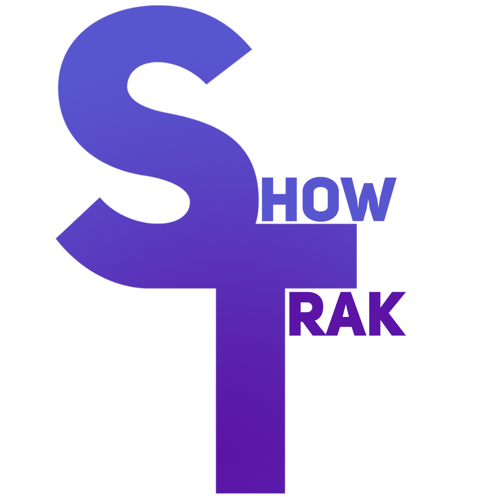

ShowTrak Timers
SHOW
EDIT
Edit Timer
Label
Type
Timer
Stopwatch
Duration (mm:ss) for Timers, leave blank for Stopwatch
Set to mm:ss or hh:mm:ss. For Stopwatch, leave empty.
Show in Web Panel
Cancel
Delete
Save
Keyboard Shortcuts
Close
ShowTrak Timers
Settings
OSC Dictionary
Open Logs Directory
Export Configuration
Import Configuration From File
Open Suppport Discord
Close ShowTrak Timers
About ShowTrak
ShowTrak Timers is an open-source project founded by
Tom Kirkman-Wood
in 2025
Close
Are you sure you want to do this?
Cancel
Confirm